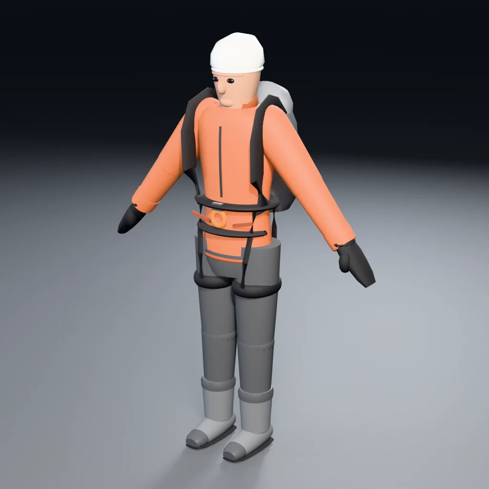
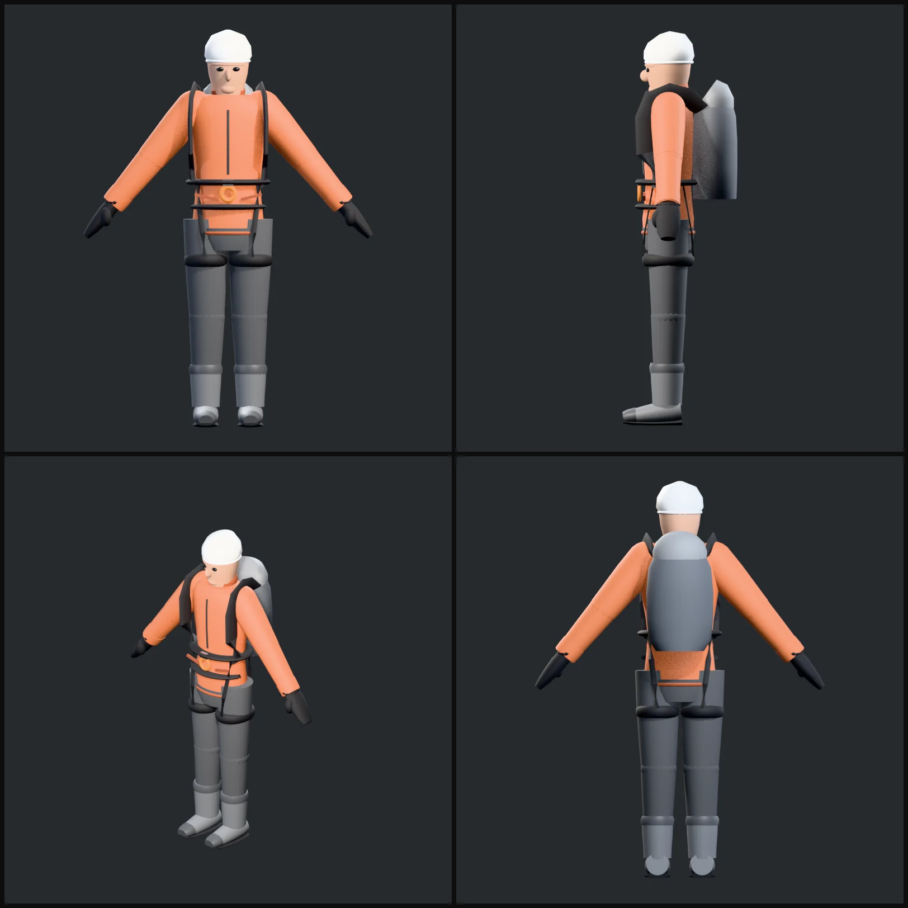

3/4 view

4-view sheet

Player charactercharacter
Mountaineer in a red-orange hardshell, black alpine harness, white vented helmet and a 30 L pack. Rigged with 22 bones using Unity Humanoid names and explicit per-vertex weights.
Skinned mesh + armature in the FBX. Rest pose is an A-pose.
три 15,184размер 1.775 m tall (7.5 heads)